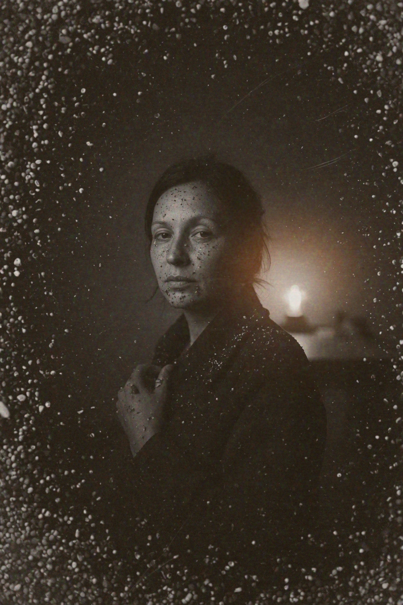
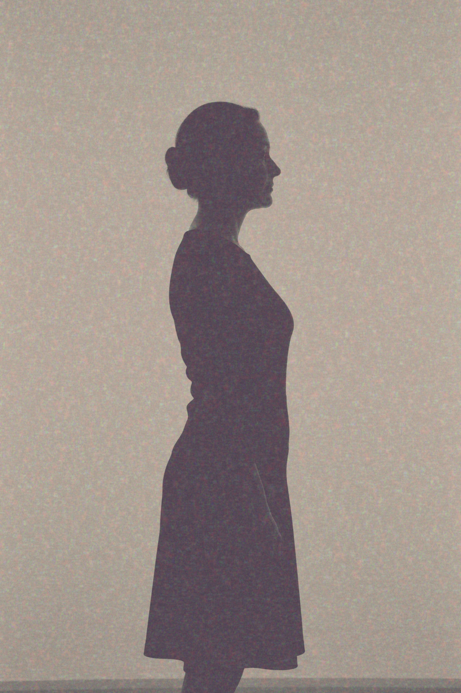
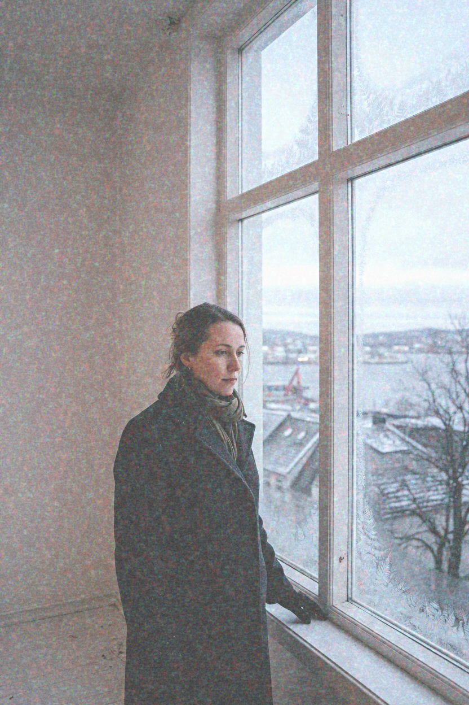
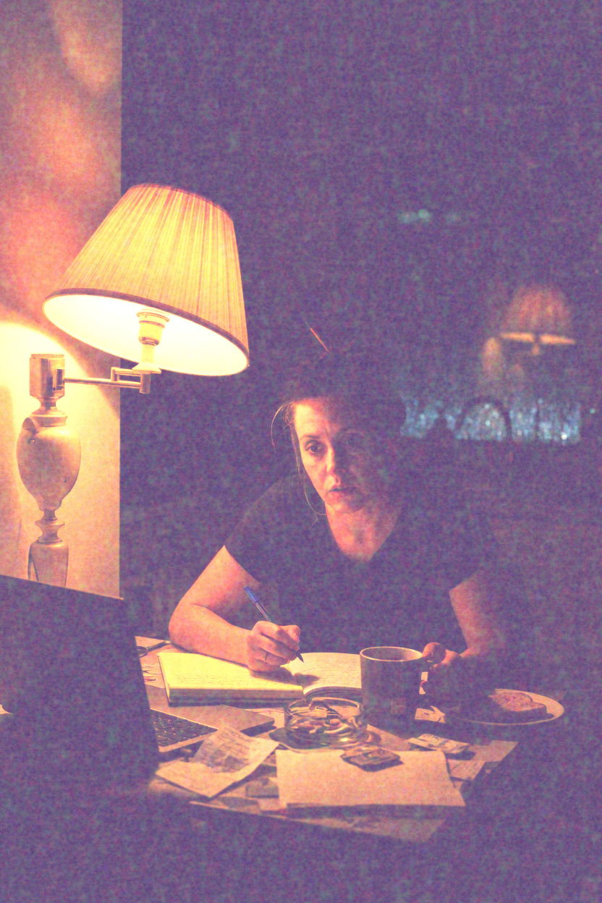
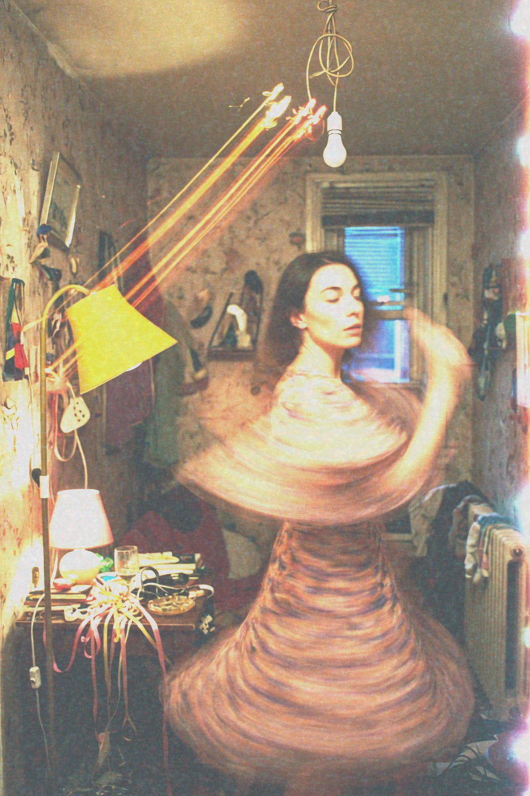

<!doctype html>
<meta charset="utf-8">
<title>ideas, five grades</title>
<style>
  body { margin: 0; background: #111; color: #ddd; font: 14px/1.4 sans-serif; }
  main { display: grid; grid-template-columns: repeat(3, 1fr); gap: 12px; padding: 12px; }
  figure { margin: 0; }
  img, video { width: 100%; height: auto; display: block; background: #000; }
  figcaption { padding: 6px 0 12px; }
</style>
<main>
  <figure><figcaption>portrait · Portra</figcaption></figure>
  <figure><figcaption>cinematic · Vision3 500T</figcaption></figure>
  <figure><figcaption>street · Tri-X</figcaption></figure>
  <figure><figcaption>neon night · Cinestill 800T</figcaption></figure>
  <figure><figcaption>process E-6 · Ektachrome</figcaption></figure>
  <figure><video src="dancing.mp4" controls autoplay loop></video><figcaption>the neon-night frame, animated</figcaption></figure>
</main>
